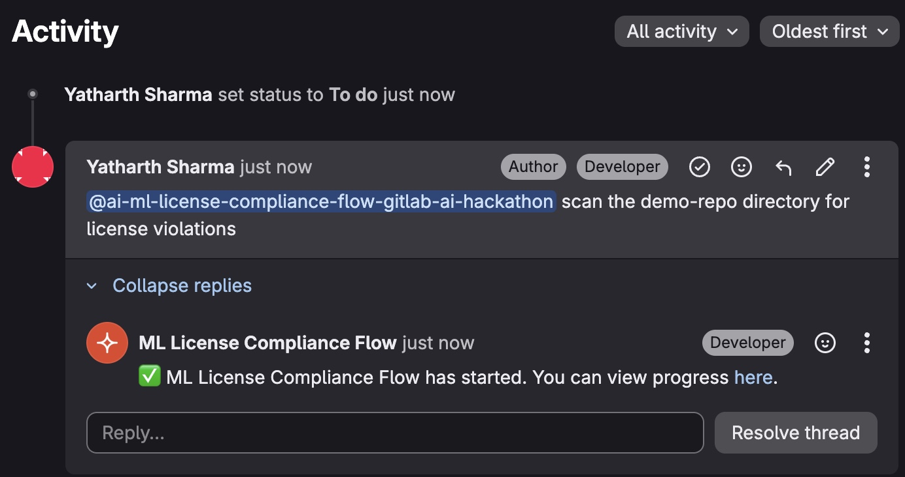

The first CI/CD agent that audits Python packages, Hugging Face models, and training datasets together - in a single automated pass. Powered by Anthropic Claude via GitLab Duo.
The agent runs three scanners in sequence, applies your org's policy rules, and produces a CycloneDX ML Bill of Materials - natively parsed by GitLab's security dashboard.
Comment @ai-ml-license-compliance-flow on any GitLab issue, add a target directory, and the agent scans and reports back with findings and remediation steps.

FOSSA, Snyk, and Black Duck cover code dependencies well. None of them touch model licenses or training datasets.
| Capability | FOSSA | Snyk | Black Duck | This agent |
|---|---|---|---|---|
| Python package licenses | ✓ | ✓ | ✓ | ✓ |
| Transitive dependency resolution | ✓ | ✓ | ✓ | ✓ |
| AGPL + SaaS context detection | - | - | - | ✓ |
| HF model license lookup (API) | - | - | file scan only | ✓ |
| Custom AI licenses (Llama, OpenRAIL) | - | - | - | ✓ |
| Llama attribution + anti-distillation | - | - | - | ✓ |
| Training dataset license scanning | - | - | - | ✓ |
| CC-BY-NC commercial use detection | - | - | - | ✓ |
| CycloneDX ML-BOM output | - | experimental | partial | ✓ |
| Plain-English summaries via Claude | - | - | - | ✓ |
A real scan of demo-repo/ finding all 5 compliance violations (1 critical, 3 high, 1 medium) across packages, models, and datasets.